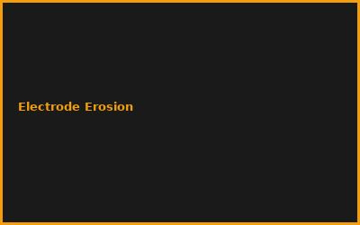
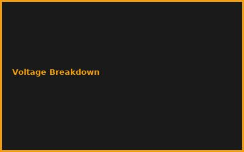
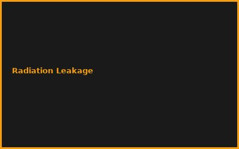

WICHTIGE SICHERHEITSHINWEISE
- Hochspannung (30-50 kV): Lebensgefahr bei unsachgemäßer Handhabung
- Neutronenstrahlung: Strahlenschutz und Genehmigungen erforderlich
- Vakuumsysteme: Implosionsgefahr bei Glasgefäßen
- Nur für erfahrene Physiker/Ingenieure mit entsprechender Ausbildung
- Behördliche Genehmigungen vor jedem Experiment einholen!
Kapitel 1: Fusionsphysik Grundlagen
- Coulomb-Barriere und Quantentunneln
- Deuterium-Deuterium Reaktion (einfacher als D-T)
- Energiefreisetzung und Neutronenproduktion
- Plasma-Temperatur-Anforderungen
Kapitel 2: Farnsworth-Hirsch Fusor
# Fusor Prinzip (Elektrostatischer Einschluss)
# Inneres Gitter: Negative Hochspannung (-30kV)
# Deuterium-Ionen werden zum Zentrum beschleunigt
# Kollision erzeugt Fusion (sehr geringe Ausbeute)
# Neutronennachweis bestätigt Fusion
# ACHTUNG: Nur zu Bildungszwecken!
Kapitel 3: Vakuum und Hochspannung
- Vakuumkammer (10^-3 bis 10^-5 mbar)
- Hochspannungsversorgung mit Strombegrenzung
- Deuterium-Gas-Einlass
- Elektrostatisches Gitter-Design
Kapitel 4: Sicherheit und Strahlenschutz
- Neutronendetektor (BF3 oder He-3 Zähler)
- Abschirmung: Polyethylen oder Wasser
- Elektrische Sicherheit: Entladungswiderstände
- Behördliche Meldepflichten beachten
Kapitel 5: Messungen und Diagnostik
- Neutronenspektroskopie
- Plasma-Beobachtung (sichtbarer Stern)
- Fusionsrate-Berechnung
- Reproduzierbarkeit der Ergebnisse
Kapitel 6: Forschung und Zukunft
- Polywell-Konzept (Bussard)
- Stellarator-Forschung (Wendelstein 7-X)
- ITER und kommerzielle Fusion
- Bildungsprogramme und Citizen Science
💡 PRO-TIPPS
🎯 Tipp: Starte mit Simulation
Empfehlung: Bevor du Hardware baust, simuliere mit OpenMC oder ähnlicher Software | Vorteil: Gefahrlos die Physik verstehen
💰 REALISTISCHE KOSTEN
💰 Kostenrahmen für Fusor-Projekt
Minimum: ca. 2.000-5.000€ für Grundaufbau | Professionell: 10.000-50.000€ | Hinweis: Universitätslabore bieten oft Zugang!
⚠️ HÄUFIGE FEHLER
❌ Fehler: Unterschätzte Gefahren
Was passiert: Elektrischer Schlag, Strahlenschäden, Implosion | ✅ Lösung: Nur unter professioneller Aufsicht arbeiten!
🌐 COMMUNITY
Fusor.net Forum, Open Source Fusor Projekt, Physik-Fakultäten, Makerspaces mit Laborausstattung
📸 Beispiel-Aufbauten


